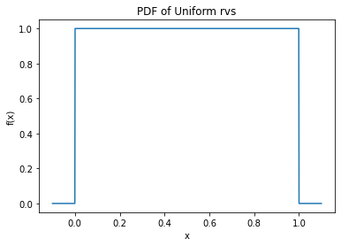
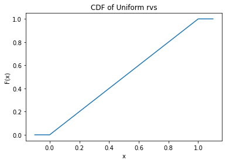
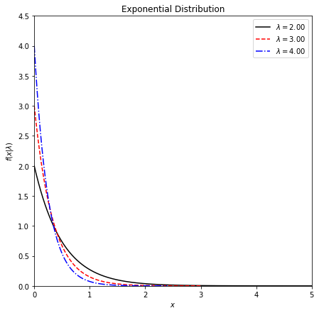
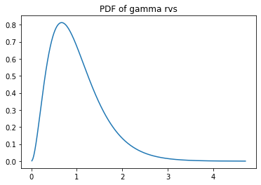
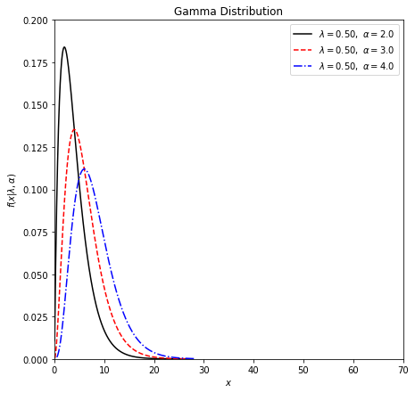

# Python code to generate the PDF and CDF of a uniform random variable
import numpy as np
import matplotlib.pyplot as plt
import scipy.stats as stats
# generate a data set of size 1000 consisting of values between -0.1 and 1.1
x = np.linspace(-0.1,1.1,1000)
#print(x)
# fit a uniform dist. on it, assuming that if 0 < x < 1, x is a uniform rand., otherwise it is not.
# calculate the uniform pdf values under these circumstances
y = stats.uniform.pdf(x, 0, 1)
#print(y)Lab 01
Special Continuous Distributions
Uniform Distribution
# Plot the pdf
plt.plot(x, y)
plt.title("PDF of Uniform rvs")
plt.xlabel("x")
plt.ylabel("f(x)")
plt.show()
# Plot the CDF
cum_prob = stats.uniform.cdf(x, 0, 1)
plt.plot(x, cum_prob)
plt.title("CDF of Uniform rvs")
plt.xlabel("x")
plt.ylabel("F(x)")
plt.show()
# Example X~Unif(0, 10)
cum_prob1 = stats.uniform.cdf(3, 0, 10)
print(cum_prob1)
cum_prob2 = 1-stats.uniform.cdf(6, 0, 10)
print(cum_prob2)
cum_prob3 = stats.uniform.cdf(8, 0, 10)-stats.uniform.cdf(3, 0, 10)
print(cum_prob3)0.3
0.4
0.5Exponential Distribution
# https://docs.scipy.org/doc/scipy/reference/generated/scipy.stats.expon.html
# Multiple curves in one plot
import numpy as np
import matplotlib.pyplot as plt
import scipy.stats as stats
#------------------------------------------------------------
# control the parameter settings
lambda_values = [2, 3, 4]
linestyles = ['-', '--', '-.']
colors = ['black', 'red', 'blue']
#------------------------------------------------------------
# plot the distributions
fig, ax = plt.subplots(figsize=(7, 7))
for l, ls, cl in zip(lambda_values, linestyles, colors):
x = stats.gamma.rvs(a = 1, scale = 1/l, size = 10000)
x1 = np.sort(x)
plt.plot(x1, stats.gamma.pdf(x1, a = 1, scale = 1/l), ls=ls, c=cl,
label=r'$\lambda=%.2f$' % (l))
plt.xlim(0, 5)
plt.ylim(0, 4.5)
plt.xlabel('$x$')
plt.ylabel(r'$f(x|\lambda)$')
plt.title('Exponential Distribution')
plt.legend(loc=0)
plt.show()
[1/(l**2) for l in lambda_values] ##variance decreases (tails get shorter as variance decreases)[0.25, 0.1111111111111111, 0.0625]# Gamma Distribution
# Python code to generate the PDF and CDF of a gamma random variable
import numpy as np
import matplotlib.pyplot as plt
import scipy.stats as stats
# generate a data set of size 1000 for different values of shape and scale parameters
# determine shape parameter
alpha1 = 3
# determine alpha
lambda1 = 3
# determine scale parameter
scale1 = 1/lambda1
# mean = alpha * scale
# variance = alpha * scale^2
x = stats.gamma.rvs(a = alpha1, scale = scale1, size = 10000)
#print(x)
x1 = np.sort(x)
#print(x1)
mean_x = np.mean(x1)
var_x = np.var(x1)
print(mean_x, var_x)0.9978994138880635 0.33920053823966356# calculate the gamma pdf values under these circumstances
y = stats.gamma.pdf(x1, a = alpha1, scale = scale1)
#print(y)# Plot the pdf
plt.plot(x1, y)
plt.title("PDF of gamma rvs")
plt.show()
Multiple curves in one plot
# Multiple curves in one plot
import numpy as np
import matplotlib.pyplot as plt
import scipy.stats as stats
#------------------------------------------------------------
# control the parameter settings
lambda_values = [1/2, 1/2, 1/2]
alpha_values = [2, 3, 4]
linestyles = ['-', '--', '-.']
colors = ['black', 'red', 'blue']
#------------------------------------------------------------
# plot the distributions
fig, ax = plt.subplots(figsize=(7, 7))
for k, l, ls, cl in zip(alpha_values, lambda_values, linestyles, colors):
x = stats.gamma.rvs(a = k, scale = 1/l, size = 10000)
x1 = np.sort(x)
plt.plot(x1, stats.gamma.pdf(x1, a = k, scale = 1/l), ls=ls, c=cl,
label=r'$\lambda=%.2f,\ \alpha=%.1f$' % (l, k))
plt.xlim(0, 70)
plt.ylim(0, 0.2)
plt.xlabel('$x$')
plt.ylabel(r'$f(x|\lambda, \alpha)$')
plt.title('Gamma Distribution')
plt.legend(loc=0)
plt.show()